Where Things End Up · 1 degree · 7 / 30 days · Five-model comparison
Equal drifters within cell, equal cells. Fixed nominal 90% regions. Final test remains locked.
Full report · Primary data · Difference intervals · Weights and support
| horizon_days | model | brier | region90_cells | region90_hit | region90_mass | outside_local_union | zero_true_probability | evaluable_ids | evaluable_pairs |
|---|---|---|---|---|---|---|---|---|---|
| 7 | Adaptive | 0.966486 | 37.552006 | 0.885722 | 0.903166 | 0.002927 | 0.001522 | 385 | 303288 |
| 7 | B2 | 0.981297 | 17.558281 | 0.748378 | 0.910350 | 0.002927 | 0.063489 | 385 | 303288 |
| 7 | Fixed | 0.962457 | 42.711648 | 0.899558 | 0.902641 | 0.002927 | 0.001522 | 385 | 303288 |
| 7 | LocalEndpoint | 0.958288 | 27.358146 | 0.881910 | 0.904131 | 0.002927 | 0.002927 | 385 | 303288 |
| 7 | LocalEndpointAdaptive | 0.959104 | 27.217348 | 0.882367 | 0.904356 | 0.002927 | 0.002927 | 385 | 303288 |
| 30 | Adaptive | 0.995303 | 130.933224 | 0.777365 | 0.900950 | 0.056044 | 0.014935 | 337 | 268998 |
| 30 | B2 | 1.017814 | 56.570651 | 0.502761 | 0.908223 | 0.056044 | 0.314331 | 337 | 268998 |
| 30 | Fixed | 0.994931 | 133.857527 | 0.775861 | 0.900926 | 0.056044 | 0.014935 | 337 | 268998 |
| 30 | LocalEndpoint | 0.993751 | 104.679444 | 0.762831 | 0.901970 | 0.056044 | 0.056044 | 337 | 268998 |
| 30 | LocalEndpointAdaptive | 0.993452 | 105.340217 | 0.768356 | 0.901701 | 0.056044 | 0.056044 | 337 | 268998 |
| horizon_days | model | reference | point_Brier_gain | conditional_Brier_support | conditional_coverage_preserving | conditional_quality_preserving | conditional_smaller_region | joint_point_benefit | application_tradeoff | delta_brier | delta_region90_cells | delta_region90_hit |
|---|---|---|---|---|---|---|---|---|---|---|---|---|
| 7 | LocalEndpointAdaptive | Fixed | True | False | False | False | False | False | True | -0.003354 | -15.494300 | -0.017191 |
| 7 | LocalEndpointAdaptive | LocalEndpoint | False | False | False | False | False | False | False | 0.000816 | -0.140799 | 0.000457 |
| 30 | LocalEndpointAdaptive | Fixed | True | True | False | False | False | False | True | -0.001479 | -28.517310 | -0.007504 |
| 30 | LocalEndpointAdaptive | LocalEndpoint | True | True | True | False | False | False | True | -0.000299 | 0.660773 | 0.005526 |
Differences are adaptive local minus reference. A smaller region does not establish preserved quality. Ordinary intervals condition on fixed fits; adjusted screens are development evidence.
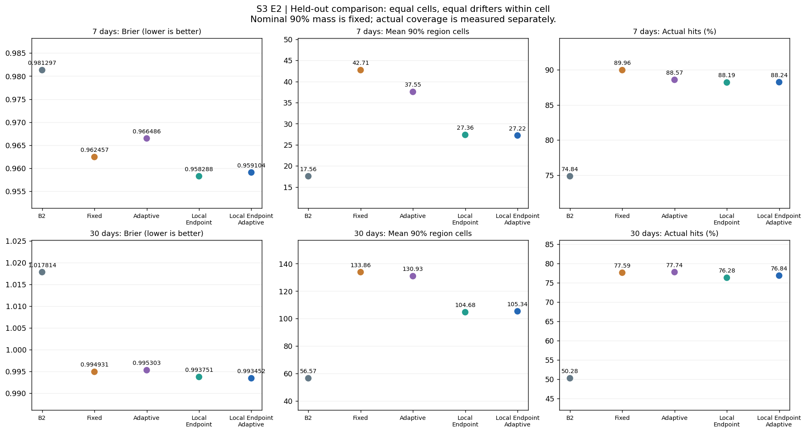
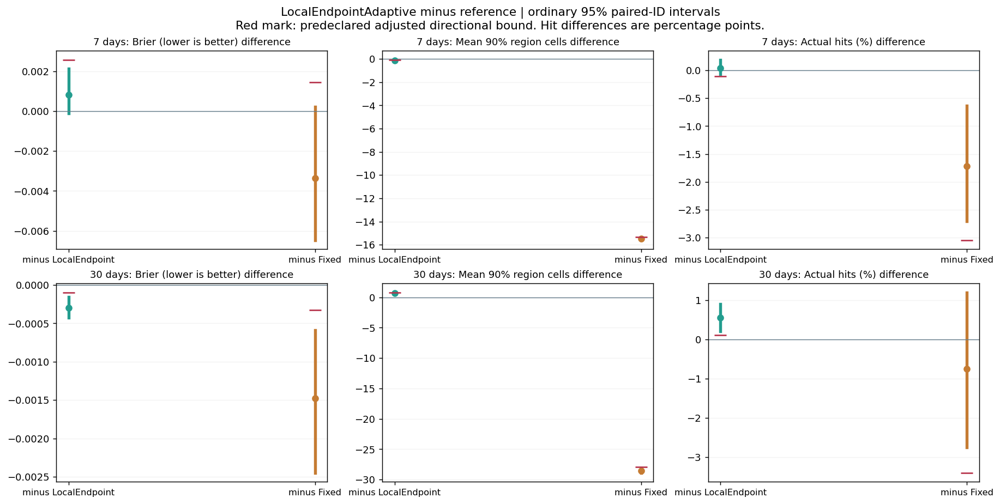
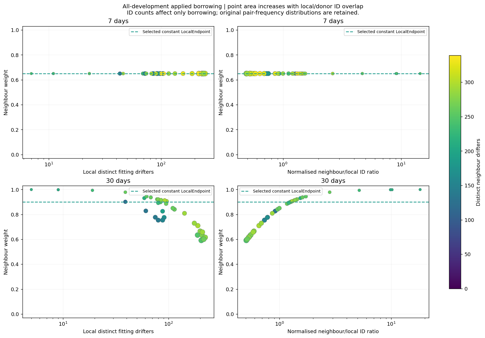
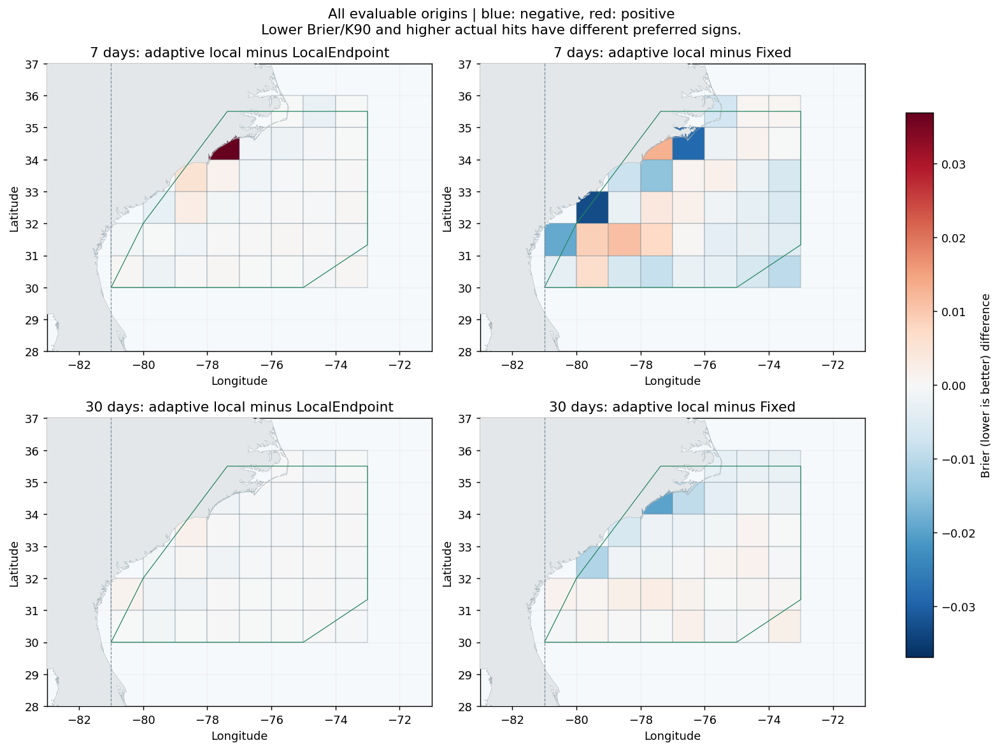
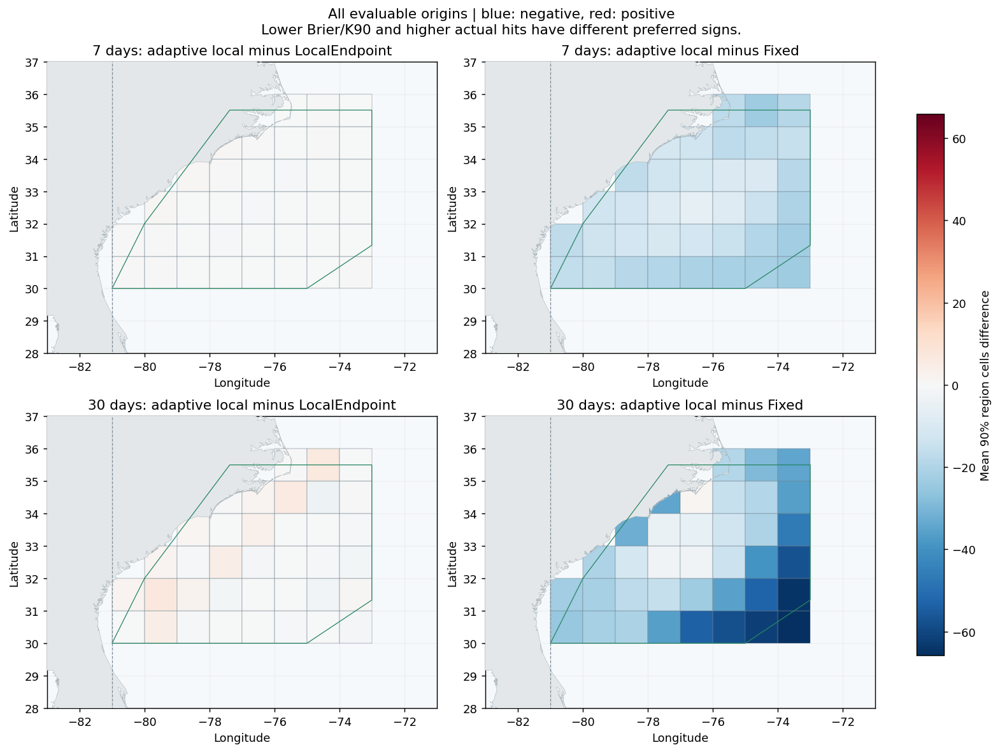
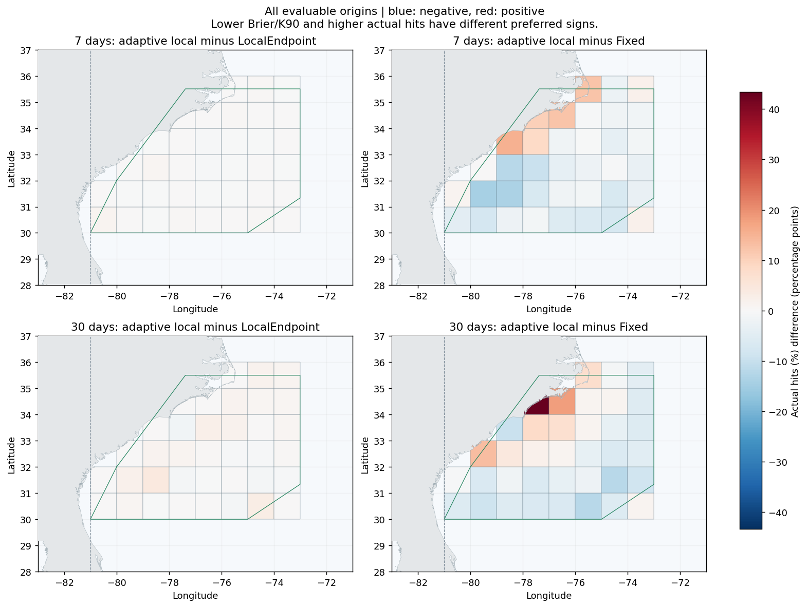
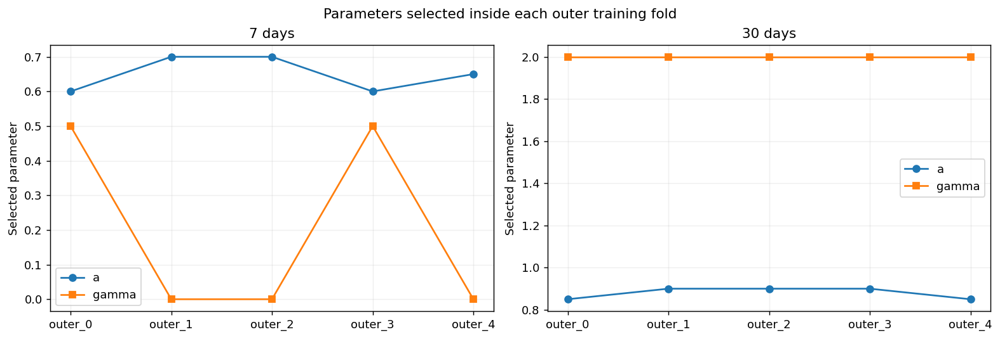
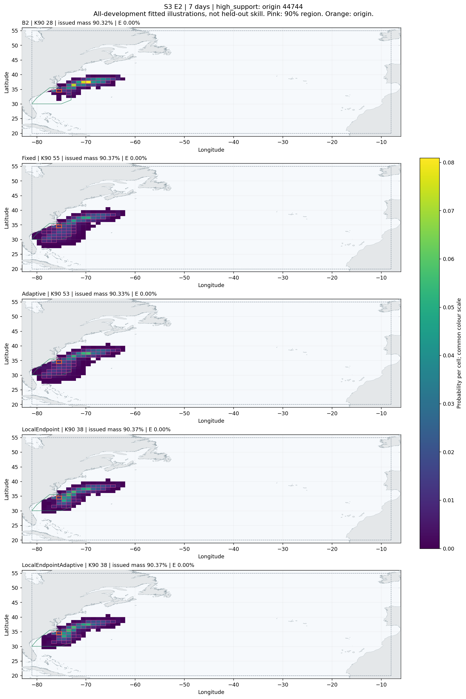
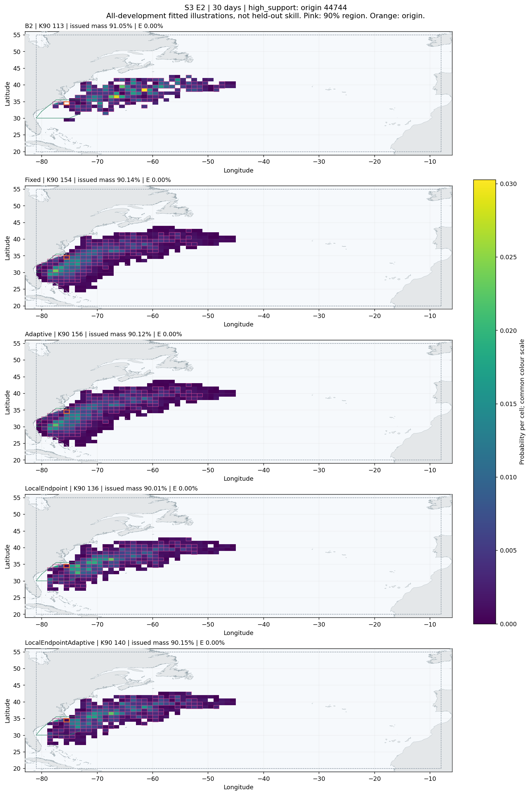
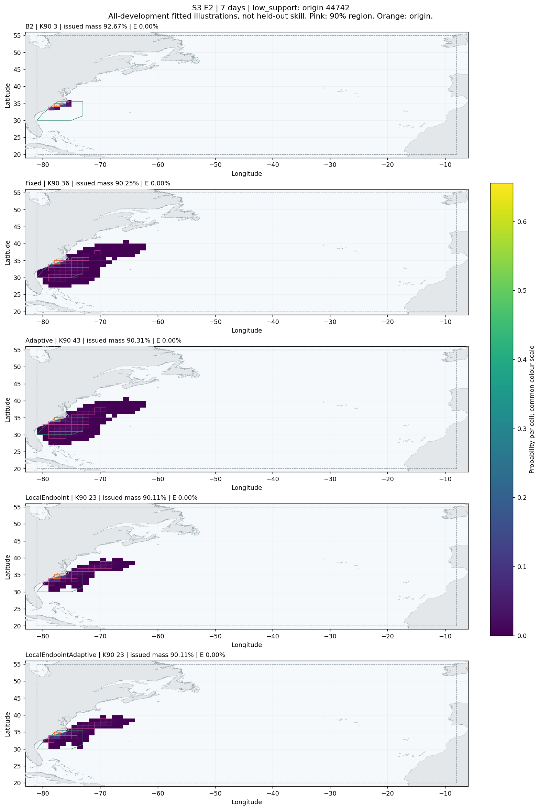
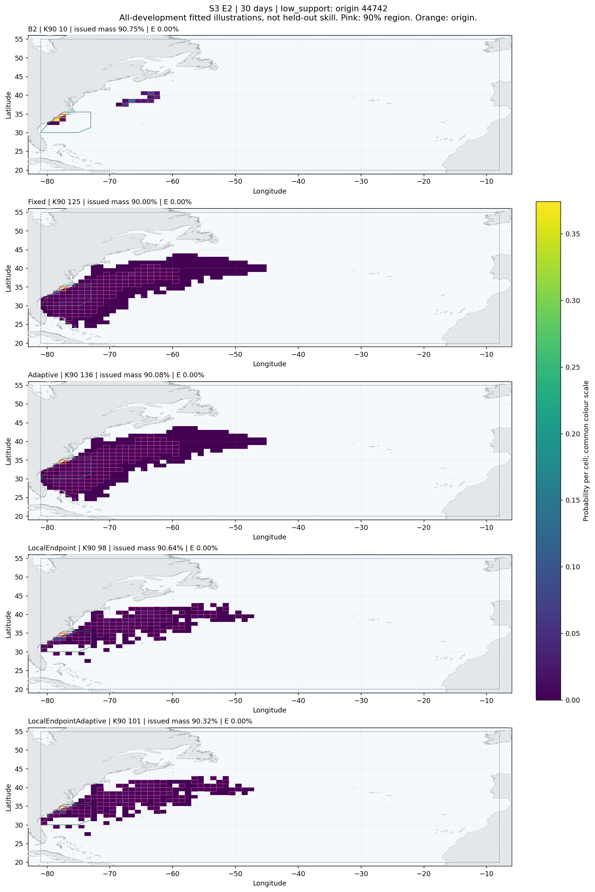
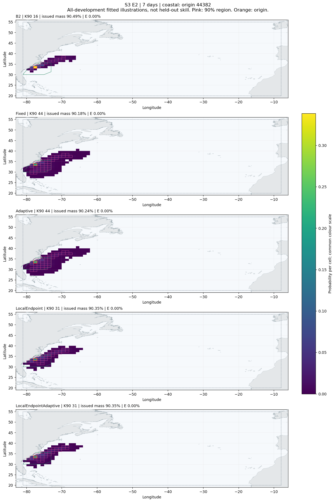
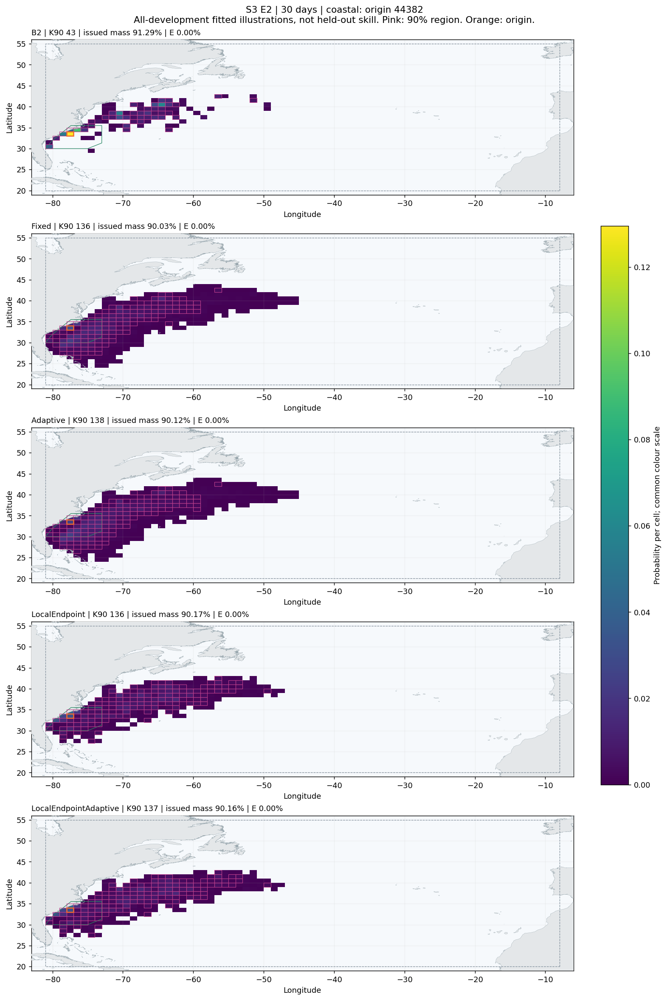